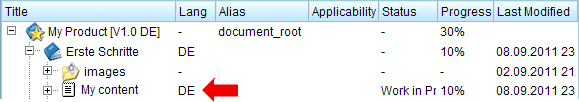

Chapter 1.7. Translating content
Docmenta has built-in translation support. If you do not need to translate your publications, then you can skip this chapter of the tutorial and continue with Chapter 1.8, Exporting publications.
Switching to translation-mode
During the creation of the product (see Chapter 1.2, Creating a new product) you have selected "English" as the original language and "German" as translation language. We now want create the German translation of the released version "1.0" of our example product. Therefore, select the version "1.0" from the version-listbox  and switch to the translation-mode by selecting the version"German" from the language-listbox
and switch to the translation-mode by selecting the version"German" from the language-listbox  :
:
Figure 1.7.1. Switching to translation mode
The "Content" workspace now shows the German translation of the product tree. You can see that the workspace has successfully switched to translation-mode by checking the title of the root-section  . In translation mode, the title additionally contains the language code. Furthermore an additional "Lang" (Language) column is shown.
. In translation mode, the title additionally contains the language code. Furthermore an additional "Lang" (Language) column is shown.
Initially, none of the existing nodes is translated. Therefore you see the original nodes, i.e. until now the translated product documentation does not differ from the original product documentation. As long as a node is not translated, the "Lang" column for this node contains a "-" character. As soon as a node is translated, the "Lang" column contains the language code of the translation language.
Translating section-titles
As an example we want to translate the title of the "Tutorial" section. Therefore double-click the "Tutorial" section-node (or choose "Edit Properties" from the context menu). This will open the node-properties dialog. Replace the english word "Tutorial" by the german translation "Erste Schritte".
Figure 1.7.2. Translating the section title
Click the "Okay" button to save the translation. As you can see, the "Lang" column now shows the language code of the translation language:
Figure 1.7.3. Indication of translated section-nodes
This way you can easily identify any non-translated nodes (i.e. the nodes which still have a "-" in the "Lang" column).
Translating content-nodes
To translate the content, double-click the content-node within the "Erste Schritte" section (or choose "Translate Content" from the context menu). This will open the content-editor with the original content of the node. You can now translate the text. In our example, just replace the first sentence "This is some new content." by "Das ist neuer Inhalt.". Before saving the content, set the progress-slider in the bottom-panel of the content-editor to 10% to indicate that there is still some translation work to do. Then save the content and close the content-editor by clicking the "Save and close" button.

Figure 1.7.4. Indication of translated content-nodes
As for the section-node, the "Lang" column of the content-node will now display the language code of the translation language.
Translating images
Sometimes an image also contains text that has to be translated. Therefore, in translation mode you can upload a translated rendition of an image which will then be used instead of the original image.
The translated image must have the same filename as the original image, but with [XX] appended to the filename, where XX is the language code of the translation language. If the filename does not end with the language code in square brackets then the system will automatically add it when the image is uploaded.
In our example, we'll upload a german translation of the image "myillustration.jpg". Therefore create a translated rendition of the image and store it as "myillustration[DE].jpg". Before you upload the translated image, be sure that you are in translation-mode (e.g. check that the language "German (DE)" is selected in the language listbox of the main window's head-panel). Then open the context menu for the "images" folder, where the original image "myillustration.jpg" is stored, and choose the menu item "Upload File". In the opened upload-dialog click the "Browse" button and select the translated image "myillustration[DE].jpg".
Figure 1.7.5. Uploading a translated image
After the file has been uploaded, the "Lang" column of the image-node displays the language code "DE". This indicates that a translated rendition of the image exists.
Figure 1.7.6. Indication of translated image
Now, preview the content-node where the image is included. You'll notice that the translated image is displayed instead of the original image (assuming that you are still in translation-mode).
Switching back to original-mode
This was a short overview of Docmenta's translation support. For the tutorial to be continued, switch back to original-mode, i.e. select "Original (EN)" from the language listbox in the main window's head-panel:

Figure 1.7.7. Switching back to original-mode